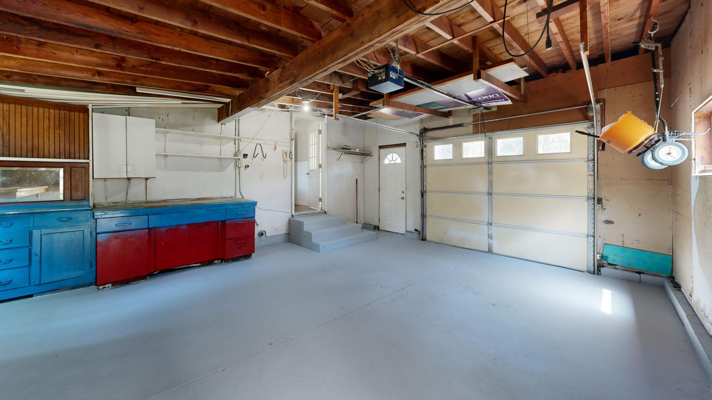
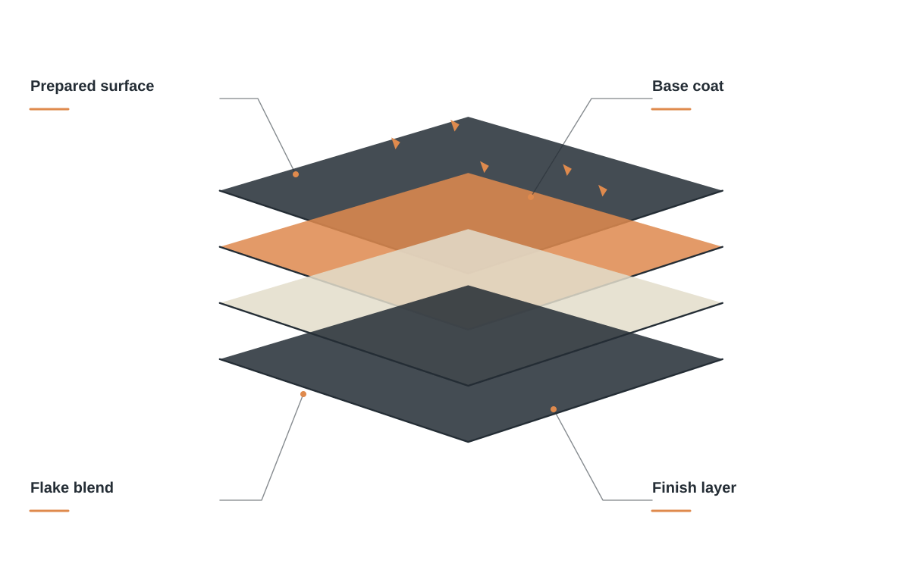
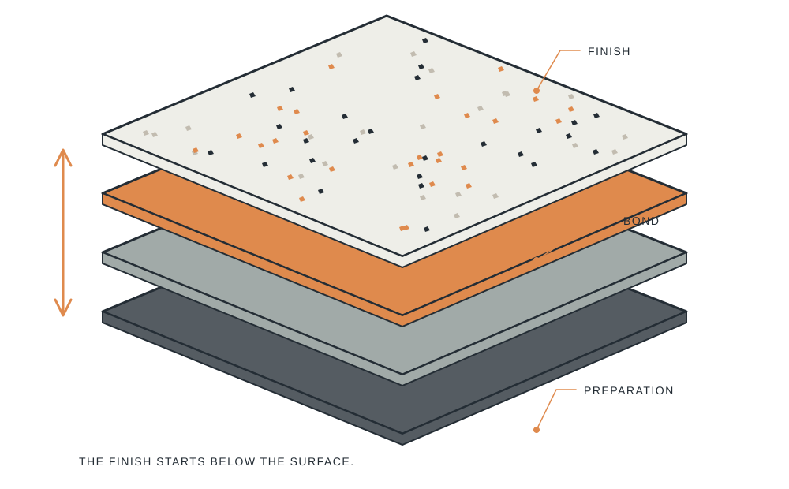
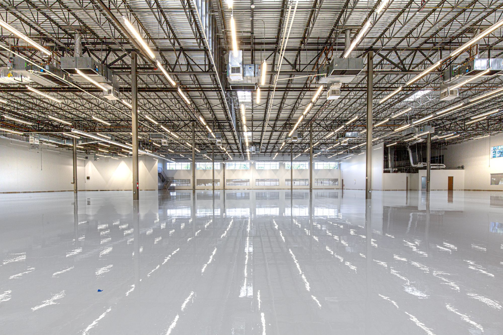
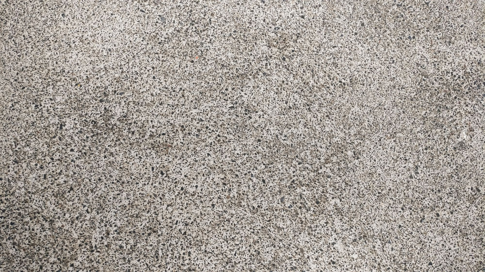
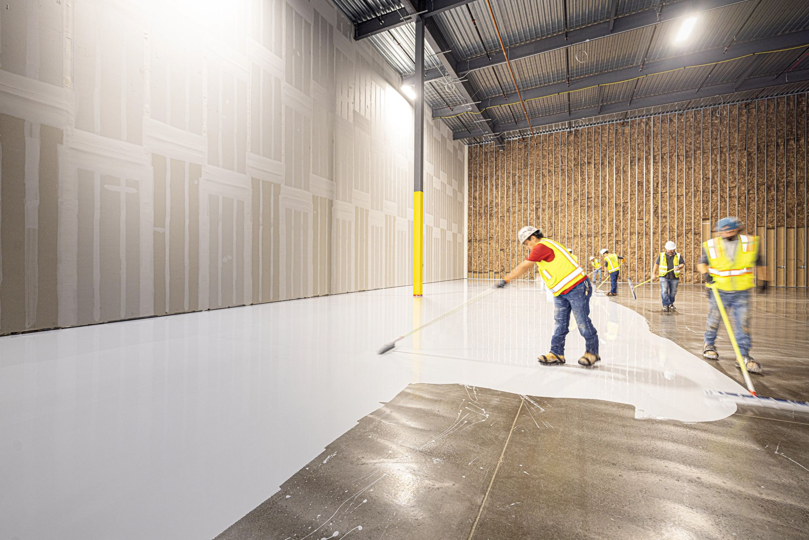
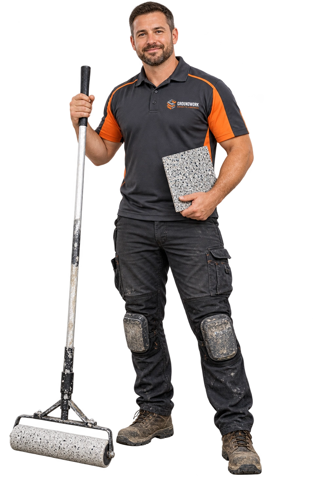
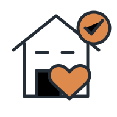

Garage floors
A more considered finish for a hard-working part of your home.
Concrete coatings built around surface preparation, practical use, and a considered finish.
Talk about your floor ↗
A more considered finish for a hard-working part of your home.
Compare textures and color blends for your space.
Address the existing surface before the coating goes down.
Discuss a coating system around the way the area is used.
A coating conversation should include the existing slab, the way the space is used, the preparation involved, and the finish you want to live with.

GROUNDWORK / THE DETAILS MATTERShare photos and what you know about the slab, old finishes, and areas of concern.
Garages, workshops, and utility areas have different practical priorities. Bring those into the scope.
Compare color and texture directions, then discuss the system and preparation included in the proposal.

We start by assessing the concrete, the environment, and the demands on the surface. Then we discuss preparation, repairs, coating options, and the finish you have in mind.




Discuss the existing concrete and the way it is used.
Review preparation, repairs, and finish options.

Agree on the scope and return-to-use guidance.
When you get in touch, a little context goes a long way. These are the details that help us start a useful conversation about your concrete coatings project.
Tell us what you have in mind ↗Tell us about surface condition so the conversation starts with your situation.
A few details about how the room is used help us understand what you need.
Share color and texture when you get in touch, including photos where useful.
Let us know about access and project timing so the proposed scope reflects your priorities.
Condition, moisture, and the existing surface affect suitability. An assessment helps establish the right approach.
Yes. We can compare available finish options against the look and practical needs of your space.
Cure and return-to-use times vary by system and conditions. Your project scope will explain the relevant guidance.